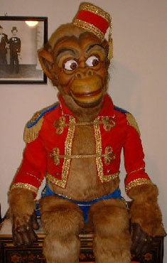

Red Flannels was the main figure of television vent Terry Bennett.
Bennett and Red appeared together on the ABC children's television show Jobblewocky Place from 1954 through 1963.
The original Red Flannels was a Turner figure. The figure in Vent Haven Museum was purchased by Bennett from legendary figure maker Frank Marshall early in Bennett's career.
This figure is on display in Building One of the museum.

Jacko
Jacko was the favorite figure of W. S. Berger's wife Josephine.
Berger had Jacko made to be used with the hurdy gurdy in an organ grinder act.
Berger purchased Jacko for $125. He paid for the figure in five monthly installments of $25 each.
This figure is on display in Building One of the museum.